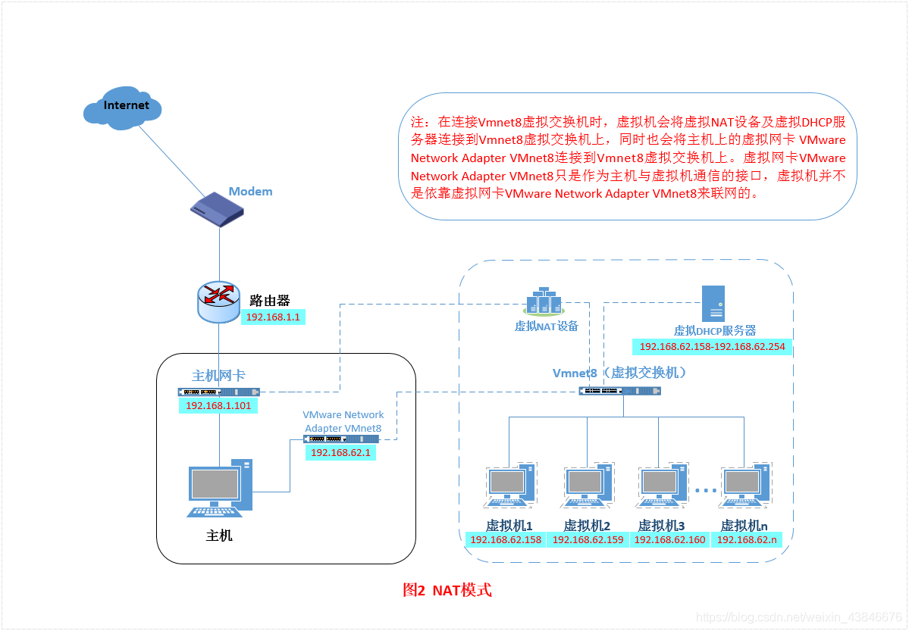

一、VMware虚拟机安装与使用

 VMware安装好之后，安装CentOS操作系统。
VMware安装好之后，安装CentOS操作系统。 选择创建一个虚拟空白硬盘。（方便学习）
要是客户机操作系统版本选项中没有CentOS选项，可能是VMware版本太低。可以选择 Other Linux 2.6x kemel
设置虚拟机名称和位置。
设置虚拟机硬件配置。虚拟机内存的大小最好不要超过主机内存的一半。要想使用CentOS的图形安装界面，内存最小设置为628MB。
设置CD/DVD ，相当于将光盘放入光驱。（放入操作系统镜像光盘）
VMware的使用小技巧：
1、右上方的钟表图标，可以创建虚拟机块照，以便以后恢复到同一状态。
2、虚拟机--->管理--->克隆，可以克隆出一台和该虚拟机一摸一样的虚拟机，并且克隆机不会像原始机一样占用那麽大的空间，而是克隆机实际上占用多大空间就会用到多大空间。需要注意的是，删除原始机之后，克隆机不能正常使用。

二、系统分区
1、磁盘分区
磁盘分区是使用分区编辑器在磁盘上划分几个逻辑部分。碟片一旦划分为数个分区，不同类的目录与文件可以存储进不同的分区。

这个是硬盘的限制。
硬盘中的一个扇区是512字节。
第一个分区最为重要其中包含引导文件和分区表。
1.446字节的引导文件
2.64字节的分区表
3.2字节的结束符
其中一个分区记录信息占分区表16字节，所以分区表只能放4个分区记录信息。因此只能有4个主分区。
而扩展分区是将其中一个分区记录信息用来指向其他分区记录的文件。

2、格式化

硬盘必须经过格式化（高级格式化）才能写入数据。windows操作系统可以识别的文件系统有FAT16、FAT32、NTF2等。Linux操作系统可以识别的文件系统有EXT2、EXT3、EXT4等。CentOS默认使用的是EXT4。

通俗的讲，格式化最主要的工作就是按照一定的规则对磁盘进行分块处理，并建立每个块的索引和文件和块之间的对应关系。

如果是windows操作系统，硬盘进行了分区，再进行格式化之后，只需要给分区分配盘符就可以直接进行使用了。
但是Linux操作系统在分配盘符之前还需要给每个分区起一个硬件文件名，
在Linux中有一个重要概念，"在linux中，所有的硬件设备都是文件"。

分区设备文件名就是在硬件设备文件名后面加上1或者2或者3等等
什么是IDE硬盘接口？什么是SCSI硬盘接口？什么是SATA硬盘接口？
它们最主要的区别是传输速度。
上图就是IDE硬盘接口，这种硬盘最古老，理论的传输速度是133MB/S。

上图是SCSI硬盘接口，它比IDE贵，速度比IDE块，理论传输速度可以达到200MB/S。这种硬盘主要用在服务器上（因为贵）。

上图是SATA硬盘接口，前两中硬盘接口现在已经基本淘汰，SATA3代理论最快传输速度可以达到每秒钟500MB/S。目前来说，不管是个人及还是服务器，使用的接口都是SATA硬盘接口。

对于硬盘b的分区方式，可以看到，扩展分区下的第一个分区编号是5，这是因为1、2、3、4这四个分区号只能给主分区或者扩展分区使用。就算硬盘只分了一个主分区，扩展分区的第一个逻辑分区的分区编号也是5，换句话说，扩展分区的第一个逻辑分区的分区编号一定是5，编号为5的分区一定是扩展分区的第一个逻辑分区。

挂载，给每个分区分配挂载点，注意：挂载点必须是目录，而且这个目录必须是空目录，才可以进行挂载点分配。
根分区（/）必须分区，
swap分区（交换分区），可以理解为虚拟内存，当真正的内存不够用的时候，可以用swap分区的硬盘空间来当内存来用。最大不能超过2GB，超过2GB之后，就只会占用硬盘空间而不会对系统产生更多的影响。
推荐分区：
/boot（启动分区，200MB），任何一个操作系统要想正常启动，都必须有一定的空余空间，如果没有给boot分区单独分区，所有的数据都放在根分区下，万一根分区满了，操作系统就有可能启动不起来。

Linux文件系统结构，如上图所示，如果往根分区下的/etc目录写入数据，会写入根分区，往根分区的/boot目录写入数据则会写入boot分区。
从Linux系统上看，boot目录和home目录都是根目录（/）的子目录，但是从硬盘上来看，它们每一个目录都有自己独立的硬盘空间。

三、Linux系统安装
启动刚才建立的虚拟机，在CD/DVD 设置镜像的文件位置。启动电源，在VMware启动界面点击F2键进入BIOS，计算机默认是通过硬盘启动的，直接启动会报错“找不到操作系统”，进入BIOS设置为通过光盘启动，Boot，Boot里的是启动顺序，谁靠上谁的启动顺序优先，可以看到，默认的硬盘启动在光盘启动之上，将光标移动到CD-ROM Driver，按“+”，将CD-ROM Driver设置为第一个。
通过虚拟机安装退出Boot的时候，可以选择 Exit Discarding Change（不保存推出）。因为虚拟机会在计算机启动的时候，检测硬盘中有没有操作系统，没有的话VMware会自动的将CD-ROM Driver设置为第一启动顺序，在第二次启动（操作系统安装完毕）的时候，会将硬盘启动设置为第一启动顺序。
注意，在真实的计算机上安装Linux操作系统的时候，没有VMware的辅助，第一次启动需要设置为光盘启动，保存再退出，第二次启动需要将光盘启动更改为硬盘启动，保存并退出。
进入光盘启动界面，有5个选项：

选择第一个，然后会弹出一个对话框，是否检测光盘，点击“Skip”（不需要检测），进入欢迎界面，点击“下一步”，选择“简体中文”，选择键盘“美国英语式”，选择“基本存储”点击“下一步”，给虚拟机起一个主机名（建议用默认的主机名）因为Linux主机名并不敏感（对于windows，在一个局域网内，不仅IP地址不能重复，主机名也不能重复，但Linux没有这个要求），选择时区（亚洲/上海），点击“下一步”，需要给管理员设置一个密码 
建议使用“喜欢的歌的歌词”，“喜欢的名人警句”，“对自己有含义的一句话”的变形。例如：flzx_3QC（飞流直下三千尺）
时效性：定期更换
继续安装，输入简单密码之后，会弹出对话框，提示密码不够安全，如果是其他用户，Linux会强制使用安全密码。但因为是第一次安装，为管理员安装（root权限），拥有绝对的权限，可以使用。
选择自定义布局，
选择创建，选择标准分区， 点击 ”创建“，设置挂载点
先设置/boot，boot分区一定会放在硬盘的最开始启动位置（Linux自动调整的），也就是说，boot分区只要分，就一定是sda1，如果强制人为的改成别的就会导致系统不能正常启动。
设置swap分区，点击文件系统类型，选择swap，可以看到挂载点变为了不适用，因为swap是给Linux内核使用的，用户不能使用，它根本就不需要挂载点。
可以根据个人习惯或者服务器的用途来设置所需要的分区，比如要是想将服务器设置为文件服务器（用户可以上传和下载文件），就可以将/home单独设立一个分区，便于管理和使用。
最后设置根分区，选择使用全部可用空间，就可以不用计算所剩磁盘的大小。
在分第四个分区的时候，可以看到，Linux将第四个分区设置为了扩展分区，将要设置分区设置为了编号为5的逻辑分区，这是因为用户在分第四个分区的时候，操作系统并不确定用户需不需要设置第五个分区，故设置为逻辑分区。
”确定“，选择”格式化“，选则”将修改写入磁盘“，点击”下一步“。

如果是个人用户，建议选择Deskop（桌面），如果是作为服务器，建议选择Minimal（最小化），可以将更多的资源作为服务使用。
如果对Linux十分熟悉，可以选择”自定义安装“，需要注意的是，如果前面没有设置中文字题，可以在自定义安装--->语言包设置--->中文。
选择Basic Server，点击”安装“。重启以进入操作系统。

Linux可以通过配置文件Kickstart安装，比如要在100台服务器上安装linux操作系统，可以安装一台，然后其他的服务器采用无人值守安装（依赖的是第一台服务器的Kickstart安装配置文件）。
四、远程登录管理工具
先连接虚拟机的网络，装完虚拟机后，会出现两块虚拟网卡，
1、桥接模式：虚拟机利用主机的真实网卡和主机通信。
好处：配置方便。坏处：在多人局域网容易出现IP地址冲突。
2、NET模式，虚拟机的网卡和VMware Network8通信。
3、Host-Only：虚拟机的网卡和VMware Network1通信。
选择NET/Host-Only 虚拟机就只能和主机进行通信，不能和局域网内的其他真实机器通信。
Host-Only ：虚拟机只能和本机通信。
NET模式：在能和本机通信的基础之上，如果主机可以访问互联网，那么虚拟机也可以访问互联网。
配置虚拟机的网卡信息，ifconfig eth；
通过命令行改变Linux操作系统网卡的ip地址，重启机器之后，IP地址会丢失，要永久保存IP地址，需要更改Linux操作系统的配置文件。
桥接模式连接互联网和NET模式连接互联网的区别：
桥接模式：简介：虚拟主机的ip和本地主机ip可以互相访问，虚拟机也可以访问互联网，虚拟机相当于互联网中的一台主机,
详解：什么是桥接模式？桥接模式就是将主机网卡与虚拟机虚拟的网卡利用虚拟网桥进行通信。在桥接的作用下，类似于把物理主机虚拟为一个交换机，所有桥接设置的虚拟机连接到这个交换机的一个接口上，物理主机也同样插在这个交换机当中，所以所有桥接下的网卡与网卡都是交换模式的，相互可以访问而不干扰。在桥接模式下，虚拟机ip地址需要与主机在同一个网段，如果需要联网，则网关与DNS需要与主机网卡一致
NET（地址转换模式）模式：简介：虚拟机可以访问互联网和本地（物理）主机，但本地主机不可以访问虚拟机。
详解：NET模式借用虚拟NET设备和虚拟DHCP服务器是虚拟机可以访问互联网（联网）
主机（host-only）模式：简介：虚拟机不可以访问本地主机互联网，发现虚拟机和本地（物理）主机网络是隔离的
详解：Host模式就是去除net设备的net模式，虚拟交换机通过虚拟vmnet1网卡与主机网卡连接进行通信，host-only模式就是将虚拟机与外网隔离使虚拟机成为一个独立的系统，只和主机进行通信如图所示：


 也可以用Xshell。
也可以用Xshell。 
也可以用xftp。